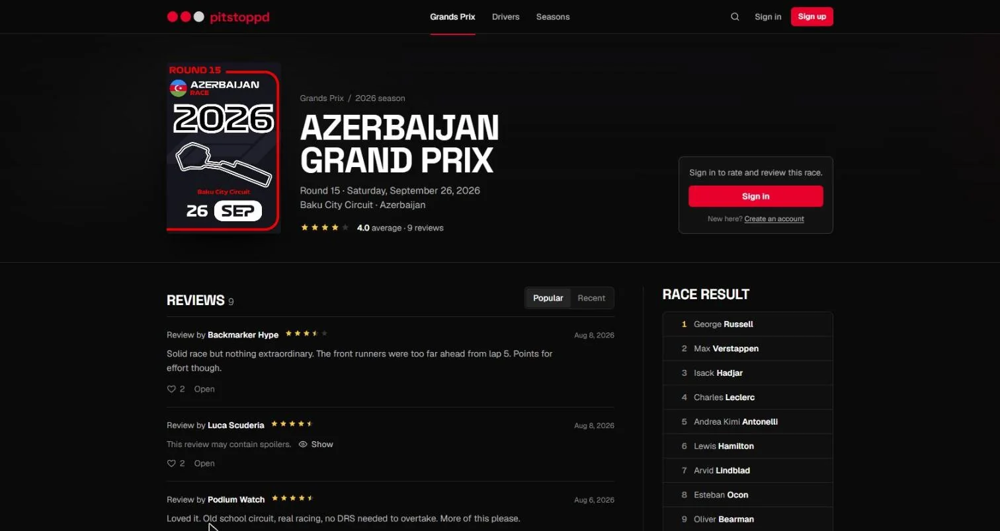
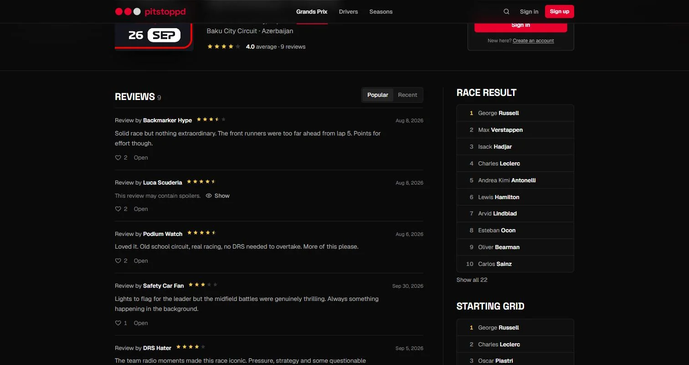
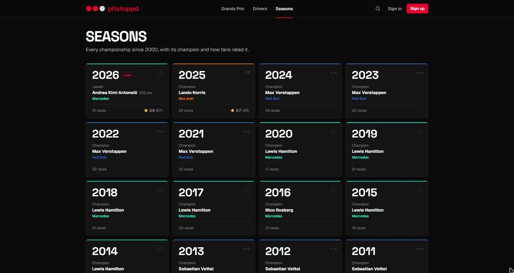
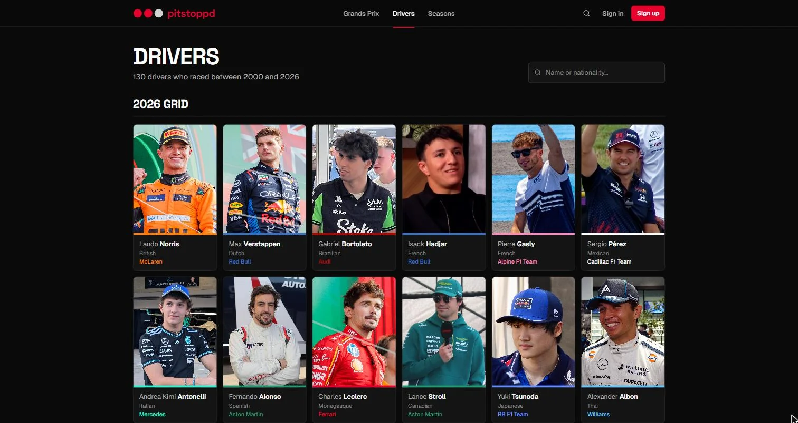
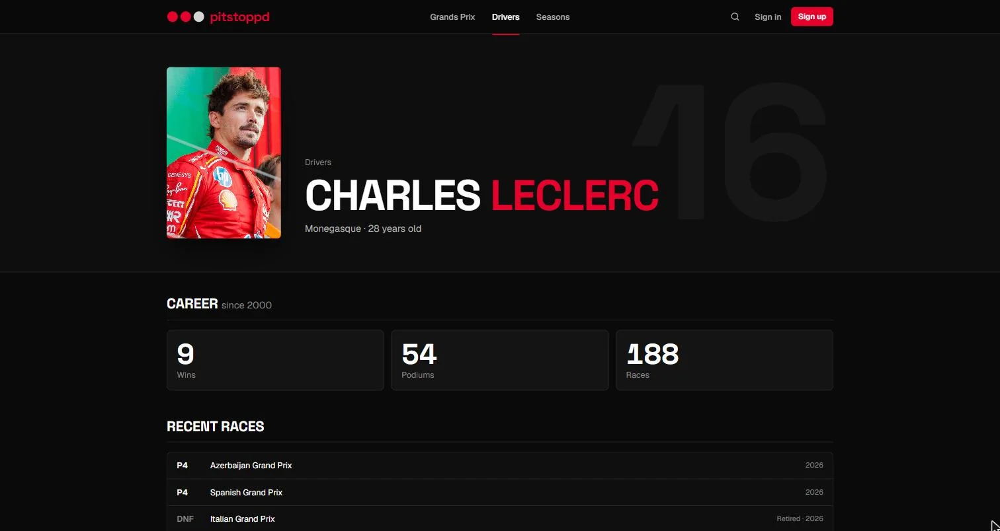
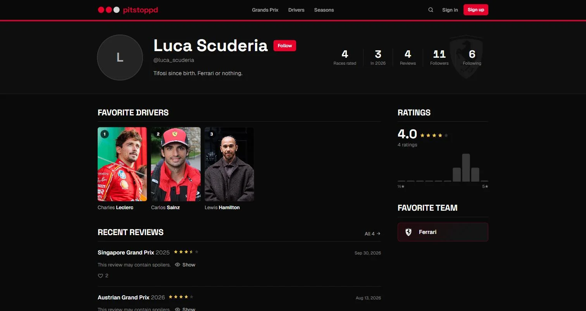

04Pitstoppd
Un Letterboxd pour la Formule 1 : chaque Grand Prix depuis 2000 a sa fiche, on le note, on le critique, et on suit ce qu'en pensent les autres. Letterboxd for Formula 1: every Grand Prix since 2000 has its page, you rate it, review it, and follow what others thought.
- Type
- App web, en ligneWeb app, live
- Stack
- React 19, Vite, Tailwind 4, Hono, SQLite
- DonnéesData
- 550+ courses, 130 pilotes, de 2000 à 2026550+ races, 130 drivers, 2000 to 2026
- StatutStatus
- Preuve de concept, terminéeProof of concept, complete
- LienLink
- pitstoppd.anderson3x11.dev

L'idéeThe idea
Letterboxd a changé la façon de parler de films : on note, on écrit trois lignes, on voit ce qu'en pensent ses amis. Pitstoppd applique la même boucle aux Grands Prix. Chaque course est traitée comme un film, avec une affiche, une note moyenne et des avis.
Letterboxd changed how people talk about films: you rate, write three lines, see what your friends thought. Pitstoppd applies the same loop to Grands Prix. Every race is treated like a film, with a poster, an average score and reviews.
Tout se lit sans compte. On n'en demande un qu'au moment d'agir : noter, critiquer, liker ou suivre quelqu'un.
Everything can be read without an account. One is only asked for when acting: rating, reviewing, liking or following someone.
Les Grands PrixGrands Prix
Chaque course a sa fiche : résultat complet, grille de départ, note moyenne et avis, triés par popularité ou par date. On note de 0,5 à 5 étoiles, une critique par course, et une critique peut être marquée « spoiler » : elle reste masquée jusqu'à ce qu'on clique.
Every race has its page: full result, starting grid, average score and reviews, sorted by popularity or date. Ratings go from 0.5 to 5 stars, one review per race, and a review can be flagged as a spoiler: it stays hidden until you click.


Saisons, pilotes, profilsSeasons, drivers, profiles
Chaque saison depuis 2000 avec son champion, les classements pilotes et constructeurs, et la note que lui donnent les fans. Une fiche par pilote avec sa carrière et ses dernières courses. Et des profils à la Letterboxd : pilotes et écurie préférés, répartition des notes, critiques récentes, abonnés et abonnements, avec un fil d'activité de ceux qu'on suit.
Every season since 2000 with its champion, driver and constructor standings, and the score fans give it. A page per driver with their career and recent races. And Letterboxd-style profiles: favorite drivers and team, rating distribution, recent reviews, followers and following, with an activity feed of the people you follow.




Choix techniquesTechnical choices
De Supabase à mon propre back-end. La première version reposait sur Supabase pour l'authentification, la base et le stockage. Je l'ai remplacé par une API Hono et le SQLite intégré à Node (node:sqlite), qui sert aussi le front. Résultat : plus aucun service externe, une seule image Docker et un volume persistant, déployés sur mon serveur avec Coolify.
From Supabase to my own back end. The first version relied on Supabase for auth, database and storage. I replaced it with a Hono API and Node's built-in SQLite (node:sqlite), which also serves the front. The result: no external service, one Docker image and a persistent volume, deployed on my server with Coolify.
L'authentification faite à la main, proprement. Mots de passe hachés avec scrypt et un sel aléatoire, comparés en temps constant. Sessions dans un cookie httpOnly, SameSite=Lax, Secure en production. Les règles métier sont dans la base : une seule note et une seule critique par personne et par course, suppression en cascade quand un compte est supprimé.
Hand-written auth, done properly. Passwords hashed with scrypt and a random salt, compared in constant time. Sessions in an httpOnly, SameSite=Lax cookie, Secure in production. Business rules live in the database: one rating and one review per person and per race, cascading deletes when an account is removed.
// server/db.js
const salt = randomBytes(16).toString('hex')
return `${salt}:${scryptSync(password, salt, 64).toString('hex')}`
// check: timingSafeEqual(scryptSync(password, salt, 64), stored)Des données à jour toutes seules. Résultats et pilotes viennent de l'API Jolpica-F1 (le successeur d'Ergast), les affiches de TheSportsDB, les photos de Wikipedia. Les données de référence sont chargées dans SQLite au premier démarrage, et une tâche planifiée récupère chaque jour la saison en cours.
Data that updates itself. Results and drivers come from the Jolpica-F1 API (Ergast's successor), posters from TheSportsDB, photos from Wikipedia. Reference data is loaded into SQLite on first start, and a scheduled task pulls the current season every day.
Testé de bout en bout. npm run check démarre l'API sur une base jetable et rejoue tout le parcours : inscription, note, critique, like, abonnement. La CI le lance à chaque push.
Tested end to end. npm run check starts the API on a throwaway database and replays the whole journey: sign-up, rating, review, like, follow. CI runs it on every push.
LimitesLimits
C'est une preuve de concept : les comptes et les avis visibles sur le site sont des données de démonstration. Et les photos des pilotes, chargées depuis Wikipedia, peuvent mettre quelques secondes à apparaître.
It's a proof of concept: the accounts and reviews visible on the site are demo data. And driver photos, loaded from Wikipedia, can take a few seconds to show up.